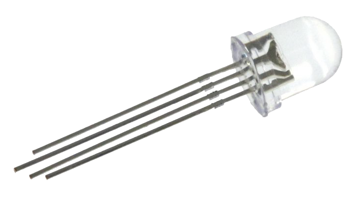
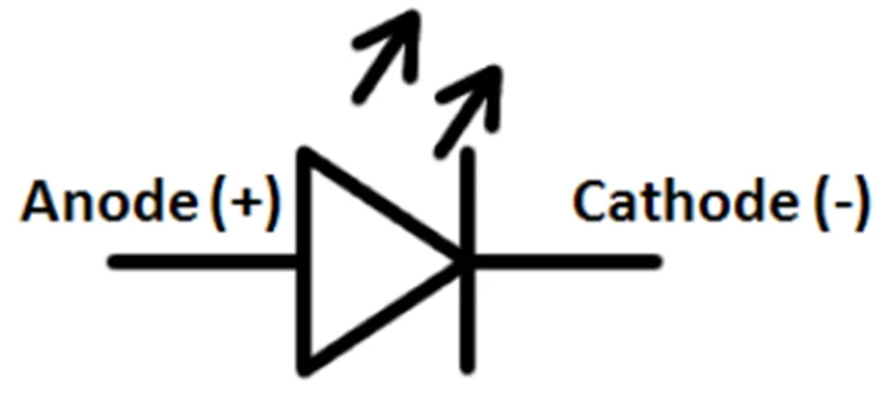
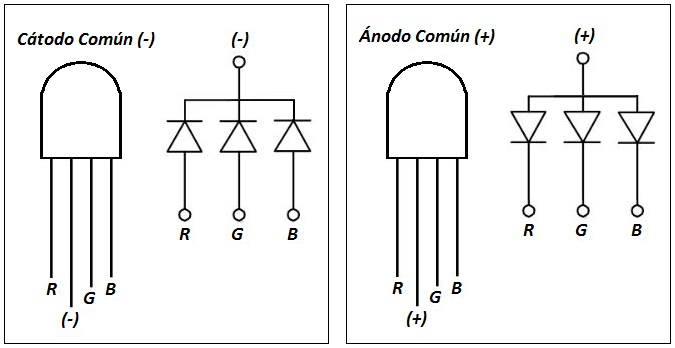
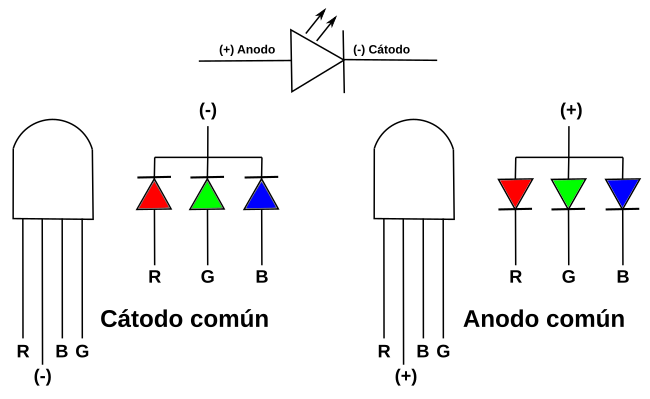
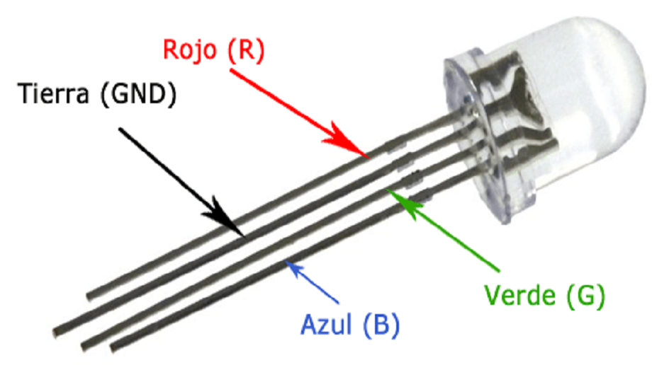
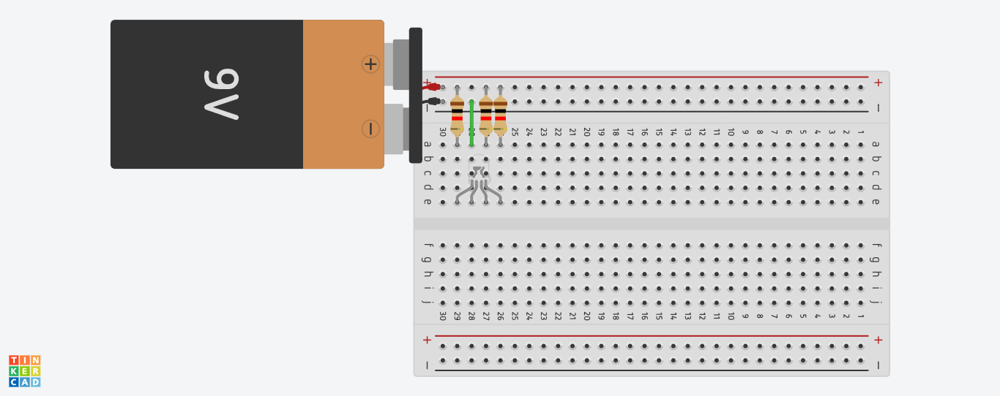
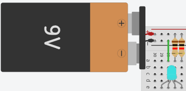
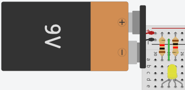
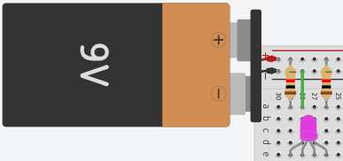

Diodo Led RGB

¿Que es?
Un diodo LED RGB es un tipo de emisor de luz compuesto por tres diodos independientes en un solo encapsulado: uno rojo, uno verde y uno azul. Al ajustar la intensidad de cada uno de estos colores, se pueden generar millones de tonalidades distintas, incluyendo el blanco.La mezcla de colores en diodo LED RGB se basa en el principio de combinación adtiva de la luz:
- Rojo + Verde = Amarillo
- Rojo + Azul = Magenta
- Azul + Verder = Cian
- ROjo + Verde + Azul = Blanco
Potenciometro
Simbolo Esquematico

¿Para que sirve?
Un diodo LED RGB sirve para generar una amplia gama de colores mezclando luz roja, verde y azul (RGB) es un solo componente. Se utiliza principalmente para iluminación decorativa/ambiental, señalización, pantallas de visualización y proyectos de electrónica programable (como arduino) para crear efectos visuales.- dato 0: texto texto texto.
- dato 1: Texto texto texto.
- dato 2: texto texto texto.
¿Como funciona?
¿Cómo funcionan? Bueno, RGB significa Rojo, Verde y Azul. Estos son los colores primarios de la luz. Cuando los mezclas de diferentes maneras, puedes crear casi cualquier color que puedas imaginar. ¡Igual que cuando mezclas pinturas para obtener diferentes colores, también puedes mezclar luz! Cada LED RGB tiene tres pequeñas fuentes de luz dentro de él: una para rojo, una para verde y una para azul.Cuando enciendes un LED RGB, empieza a brillar. Pero el color que brilla depende de cuánta energía va a cada una de las tres fuentes de luz. Si solo la roja recibe energía, el LED brillará en rojo. Si la roja y la verde reciben energía, el LED brillará en amarillo. Esto se debe a que la luz roja y verde se mezclan para hacer amarillo. Esta es la ciencia básica detrás de cómo funcionan los LEDs RGB. ¡Todo se trata de mezclar colores de luz!
Caracteristicas Principales
Un diodo LED RGB combina tres diodos internos (rojo, verde, azul) en un solo encapsulado de 4 pines, permitiendo crear mirrlones de colores mediante la mezcla adtiva de luz. Sus caracteristicas principales incluyen control independiente de intensidad por color (frecuencia via PWM) y configuraciones de cátodo o ánodo común.- Tres en Uno: Contiene chips emisores de luz Roja, Verde y Azul (RGB) en una sola estructura.
- Mezcla de Colores: Al ajustar la intensidad de cada componente (generalmente de 0 a 255 con PWM), se logran diversos colores y tonos blancos.
- configuración de Pines (4 pines): Posee un pin común (ánodo o cátodo) y tres pines individuales para cada color.
- Cátodo Común (CC): El pin más largo es negativo (tierra/GND).
- Ánodo Común (CA): El pin más largo es positivo (VCC).
- Voltajes y Corriente: El rojo suele trabajar a ~2.1V, mientras que el verde y azul necesitan ~3.3V. La corriente recomendada es de unos 20mA por color.
- Uso de Resistencias: Requiere resistencias limitadoras de corriente (típicamente 220Ω - 330Ω) para cada uno de los tres colores para evitar daños.
- Versatilidad: Ideales para iluminación decorativa, indicadores de estado y pantallas, compatibles con microcontroladores como Arduino.
Simbolo y Pinout

Simbolo Electrico

Si aplica, patillaje

Ejemplo Practico
Vamos a realizar una practica basica con un diodo led rgb.
Lista de componentes
- # componente
- # componente
- # componente
- # componente
En la imagen se muestra un circuito basico de un diodo led rgb.

Si quieremos visualizar los demas colores vamos a quitar una resistencia/resistor como en la siguiente imagen y veremos el siguiente resultado.

Asi sera igual para ver los demas colores.


Errores Comunes
El uso de diodos LED RGB (Red, Green, Blue) es común en proyectos de iluminación y electrónica, pero conlleva errores frecuentes relacionados con la conexion, la alimentación y la disipación de calor. Los errores más comunes incluyen la polaridad inversa, la alta de resistencia limitadoras y la caída de tensión en tiras largas.
Principales errores y problemas
- Confusión entre Ánodo Común y Cátodo Común: Los LEDs RGB tienen 4 pines (uno común y tres para cada color). Si se confunde un ánodo común (positivo) con un cátodo común (negativo), el LED no encenderá o funcionará al revés.
- Intercambio de cables de color: Conectar el cable Rojo en la entrada Verde o Azul provoca que los colores no coincidan con el controlador (por ejemplo, seleccionas azul y enciende rojo).
- Soldaduras frías o falsos contactos: En tiras LED, una mala soldadura puede provocar que un color deje de funcionar o que parpadee todo el sistema.
- Cortocircuitos: Si los cables de color se tocan entre sí, se producirán mezclas de colores inesperadas y se pueden quemar los transistores del controlador.
Errores de Alimentación y Diseño Eléctrico
- No usar resistencias limitadoras: Conectar un LED RGB directamente a una fuente de 5V o 12V sin resistencias para cada color quemará el diodo, ya que cada color tiene un voltaje directo diferente.
- Caída de tensión (Voltage Drop): En tiras largas, el final de la tira puede mostrar colores incorrectos (típicamente amarillento o verdoso) debido a que el voltaje baja. Esto ocurre porque el diodo azul necesita más voltaje que el rojo/verde.
- Fuente de alimentación inadecuada: Usar una fuente con amperaje insuficiente o voltaje incorrecto (ej. 12V en tira de 24V) provoca parpadeos, luz tenue o funcionamiento inestable.
Errores de Instalación y Manejo
- Cortar en el lugar equivocado: Las tiras LED solo deben cortarse en los puntos marcados. Cortar en otro lugar romperá el circuito y anulará esa sección.
- Sobrecalentamiento: No disipar el calor (especialmente en tiras de alta potencia) reduce drásticamente la vida útil de los LEDs.
- Flexión excesiva: Doblar la tira LED en ángulos cerrados puede romper las pistas de cobre o las soldaduras entre segmentos
Errores de Control (Software/Controlador)
- Incompatibilidad de controlador: Usar un controlador que no soporta la carga de trabajo, lo que causa parpadeos o fallo en el cambio de colores.
- Configuración incorrecta de PWM: En Arduino o controladores programables, no configurar correctamente el ciclo de trabajo (PWM) puede dar mezclas de colores incorrectas